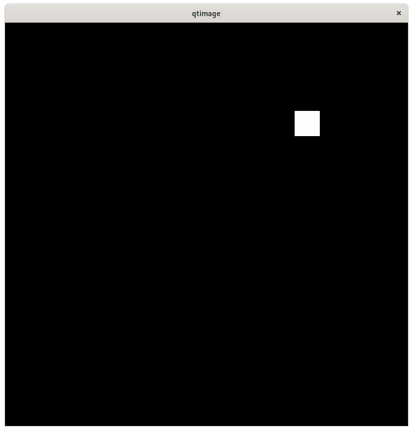

This product is available via an open source license
This document describes a Python Image Viewer that monitors data from a PVRecord. It uses the Format options from QImage.
See index For installation instructions.
After installation you are ready the run the example, which is located in directory testPython/qtimage
Run the following:
python PVAPY_Qt_Viewer.py & python PVAPYchangePeak.py
When the viewer is started the following appears:
When start is clicked the following appears:
Each time the folllowing is executed:
python PVAPYchangePeak.pyThe white square on the image moves from bottom left to upper right and changes intensity as it moves.
Next change the Format as follows:
The image will be displayed via the selected format.
The viewer also can be used record TPYqt2dimageRecord Do the following:
cd ../plot2dcurve source exportTPYqtimageRecord python PVAPYgenerateCurve.py circle
When start is clicked the following appears:
Record TPYqtpeakimageRecord has the following fields:
structure
time_t timeStamp
long secondsPastEpoch
int nanoseconds
int userTag
structure peak
double x
double xwidth
double y
double ywidth
double intensity
structure argument
structure format
int index
string[] choices
int height
int width
structure result
union value
ubyte[] uint8
ushort[] uint16
uint[] uint32
The initial value of field argument is:
structure argument
structure format
int index 0
string[] choices ["Grayscale8", "Indexed8", "RGB888", "Grayscale16"]
int height 800
int width 800
Qt_Viewer acceses the fields argument and result. When start is clicked it creates a monitor. Each time a monitor callback occurs numpyImage is called to display an image.
When setFormat is clicked and a choice made a put is issued to field argument.format.index This sets the format used when the record is processd.
Note that record TPYqt2dimageRecord has identical argument and result fields. But instead of peak it has the fields required by testPython/plot2dcurve/GenerateCurve Thus QtViewer can also be used for this record.
This does multiple puts to the record changing the fields peak.x, peak.y, and peak.intensity on each put. This is what makes the peak move from lower left to upper right.